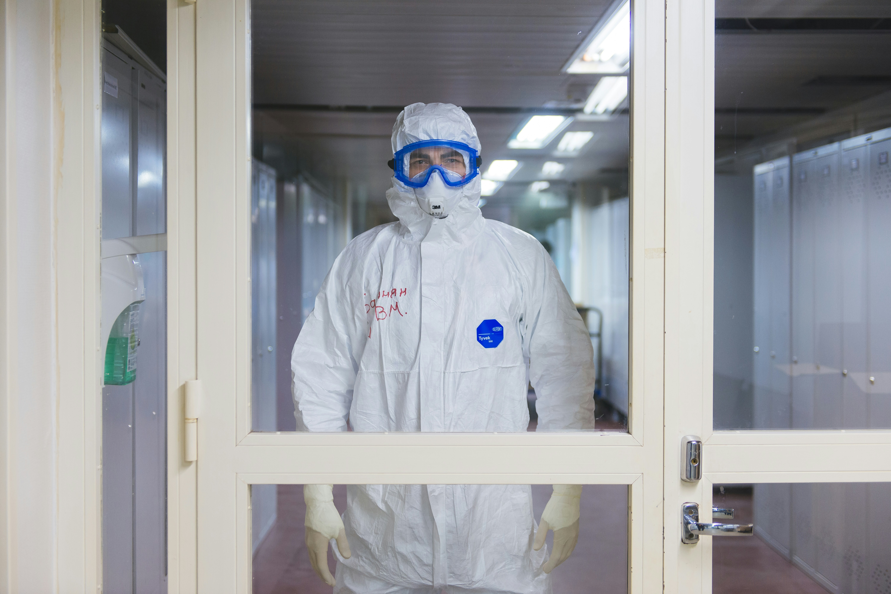

Radio Destello Online comenzó emisiones regulares el 17 de Abril del 2020, antes de ello habíamos realizado ciertas temporadas de transmisión, en el 2016, en el 2018 (en Aldea "El Ceniral" Barberena, Santa Rosa, Guatemala) y en el 2019. En el 2020 iniciaríamos con transmisiones regulares, pero tiempo después de iniciar emisiones, la emergencia por el coronavirus denominado "COVID-19" había entrado en nuestra nación originando una emergencia nacional.

En ese tiempo, Radio Destello fue brazo fuerte para la iglesia en nuestra comunidad, estableciéndonos como una radio que apoyaría a los ministros de nuestra localidad, transmitimos servicios en vivo y apoyamos a la realización de eventos virtuales, llevando esperanza para todos nuestros radioescuchas. En ese momento Radio Destello no transmitía 24 horas por motivo de que el equipo de cómputo no era el más óptimo; sin embargo tuvimos un amplio horario de transmisión de 5:00 Hrs hasta las 22:00 Hrs de lunes a Domingo. Sería hasta el año 2021 que lograríamos transmitir las 24 Hrs.
Somos la Radio que se caracteriza por ser la "Radio que se Atrevió", fuimos una radio cristiana que en su momento transmitió noticieros de renombre en su programación, fuimos la radio que se atrevió a multiplicarse, al ver la demanda por la música urbana y tropical, nos multiplicamos derivando una señal exclusiva para ello, la cual hoy en día es conocida como "Stereo Granadilla"; Somos la radio que se atrevió no solo involucrarse en cuestiones ministeriales, sino que además nos involucramos y dimos nuestra opinión sobre temas políticos, sociales e internacionales.
Actualmente Radio Destello junto a Stereo Granadilla, Gospel FM, Derramamiento Stereo y Destello TV formamos parte de Lux MediaGroup. Un grupo de medios comprometidos con la información y con edificar a nuestra audiencia.
Las 24 horas del día, 7 días a la semana, acompañándote con la mejor música y contenido
Devocional Maná
Meditaciones diarias para empezar el día.
A Travéz de la Biblia
Estiduo de la palabra de Dios, un analisis profundo versiculo por versiculo.
Una Voz Clama en el Desierto
Espacio donde escucharemos palabra de Dios en voz de distintos expositores.
Asi Fue Mi Vida
Espacio donde presentamos testimonios de cambio.
Las 5 de las 5
Espacio donde se transmiten distintos programas y podcast.
El Amor Que Vale/En Contacto
Espacio de predicas con los doctores Adrian Rogers y Chales Stanley.
Vida en Familia Hoy
Programa enfocado a la vida familiar y de pareja.
Ahora no solo nos escuchas, también nos ves. Destello TV es nuestra señal de televisión que lleva contenido inspirador, programas en vivo y mucho más directamente a tu pantalla.
DESTELLO TV
Estamos para servirte. Envíanos un mensaje y te responderemos lo antes posible
Teléfono
+502 24671131Correo
radiodestello1@yahoo.comDirección
Asentamiento Lomas de Santa Faz Zona 18, Ciudad de Guatemala, Guatemala